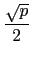

suivant: PGCD dans /p[x] :
monter: Le calcul modulaire dans
précédent: Inverse dans /p :
Table des matières
Index
Transformer un entier en sa fraction modulo p : fracmod iratrecon
fracmod (ou iratrecon pour compatibilité Maple) a deux
arguments, un entier n (ou une expression
entière) et un nombre entier p.
fracmod renvoie une fraction a/b vérifiant :
-  <
a 
, 0
b < ,
n×
b =
a(mod
p)
On tape :
fracmod(3,13)
On obtient :
-1/4
En effet :
3* -4 = - 12 = 1 ( mod 13) donc
3 = - 1/4%13.
On tape :
fracmod(13,121)
On obtient :
-4/9
En effet :
13× -9 = - 117 = 4 ( mod 121) donc
13 = - 4/9%13.
Documentation de giac écrite par Renée De Graeve